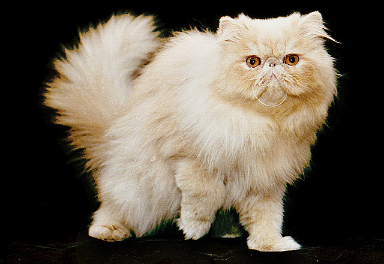

Kot Perski
Pochodzenie
Kot perski jest doskonałym przykładem tego, jak bardzo selekcja hodowlana może zmienić eksterier kotów. Współcześni bardzo krępi i płaskonosi przedstawiciele tej rasy wielce różnią się od swych przodków, którzy w 1871 roku pojawili się na pierwszej wystawie kotów rasowych w londyńskim Crystal Palace. Pokazywane wówczas persy były o wiele smuklejsze i miały znacznie dłuższe noski, i swym wyglądem bardziej przypominały tureckie angory niż swych dzisiejszych potomków.
Charakter i zachowanie
Ma spokojny temperament i zrównoważony charakter. Porusza się dostojnie i z gracją - nie w jego stylu są szalone gonitwy. Nie jest też specjalnie skoczny i raczej woli spędzić czas na kanapie niż na wędrówkach po szafach. Choć bardzo przywiązuje się do opiekuna i lubi spędzać z nim czas, to nie domaga się stałego zainteresowania.
Pielęgnacja
Koty perskie trzeba przede wszystkim regularnie czesać. Częstotliwość tego zabiegu zależy od rodzaju futra, które u niektórych przedstawicieli te rasy bardziej się plącze i filcuje niż u innych. Do czesania używamy odpowiednich szczotek i grzebieni, które nie szarpią i nie wyrywają włosów, czyli o odpowiedniej długości i kształcie zębów.